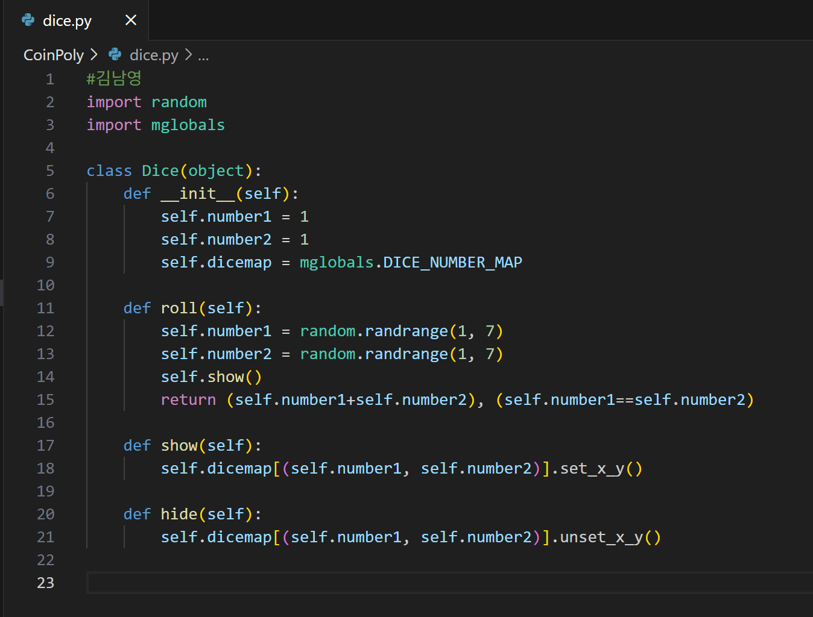
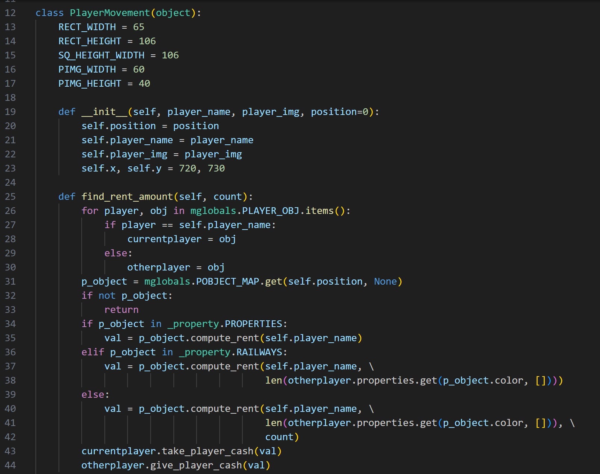
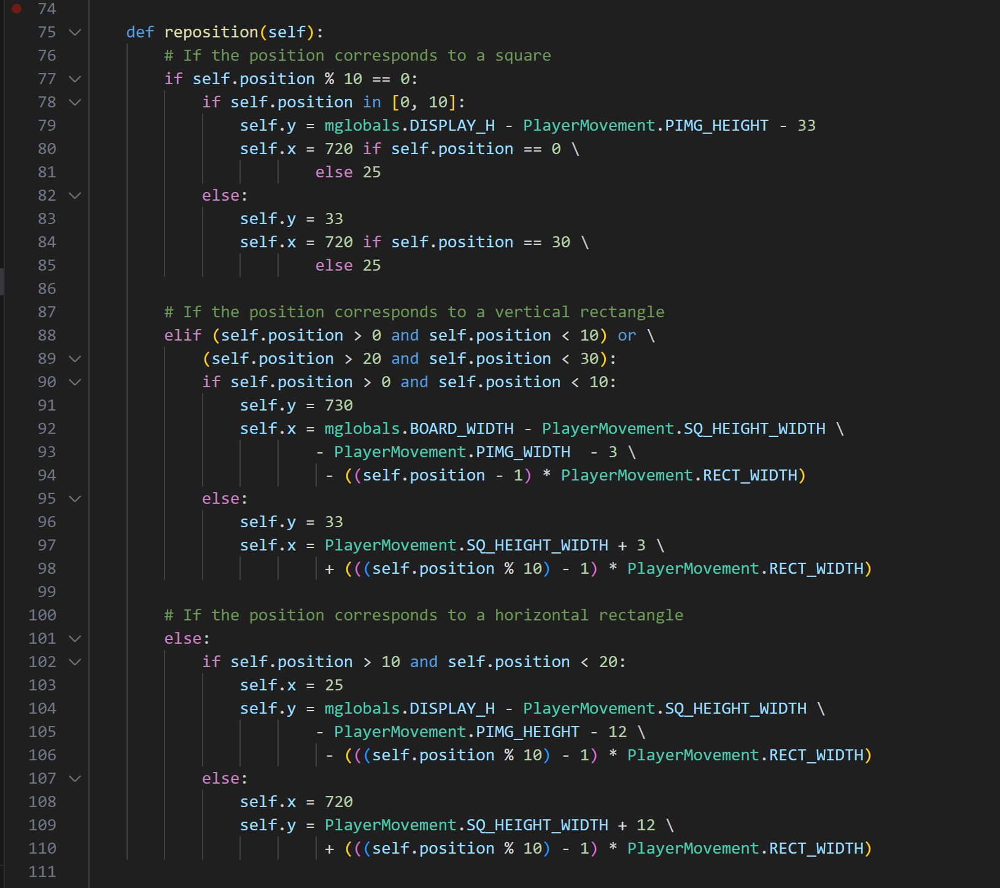

파이썬 모노폴리(확률과 통계 B반 2조)
영상

담당역할
- 주사위 굴리는 로직 및 기능 담당
- 플레이어 이동담당
주사위 로직 및 기능

주사위 클래스를 만들고 주사위를 굴릴 때는 1~6까지의 난수를 사용하여 값을 설정하였습니다.
난수를 show함수로 출력하고 hide함수를 통해 주사위의 기능이 끝나면 보이지 않도록 설정하였습니다.
플레이어


플레이어가 빌릴 수 있는 돈을 계산하는 로직과 위치를 재설정하는 함수입니다.
현재 밟고 있는 지역의 비용을 가져와 빌릴 수 있는돈을 계산하고 해당 지역을 구매할 수 있는지 없는지 확인할 수 있도록 하였고
주사위 값에 따라 reposition함수를 호출하여 위치를 계산하여 지역에 해당하는 스크린 상의 위치에 플레이어가 이동할 수 있도록 하였습니다.